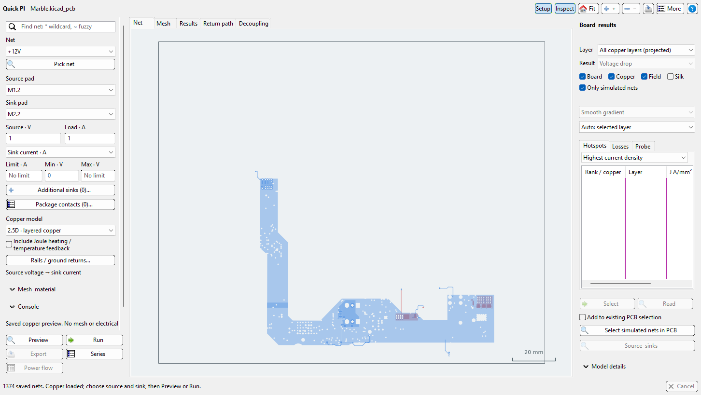
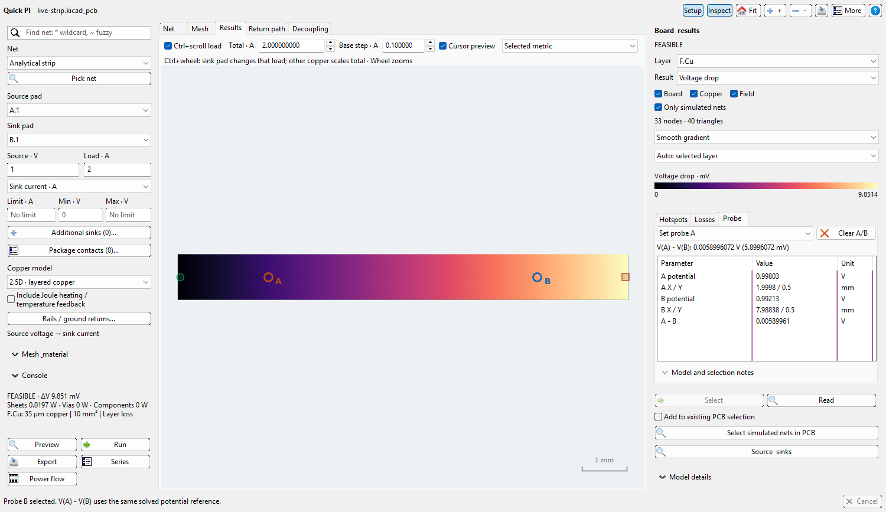
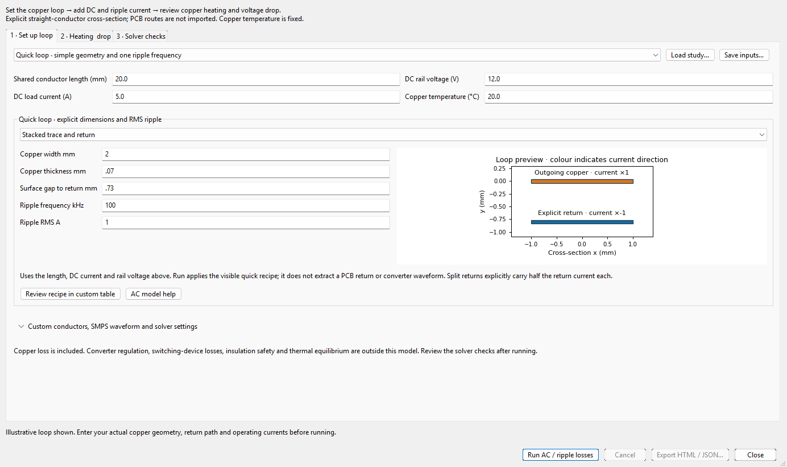
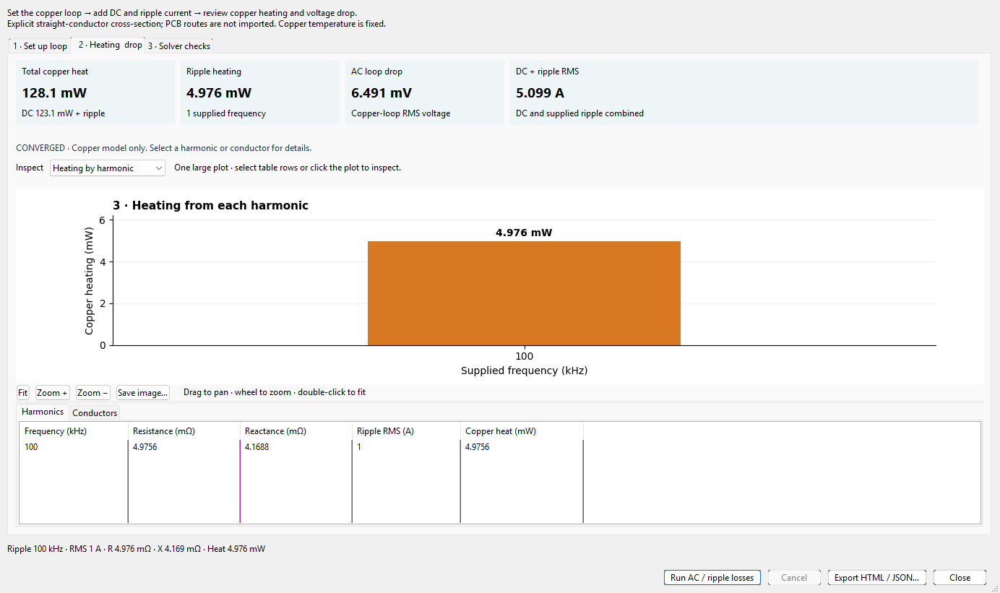
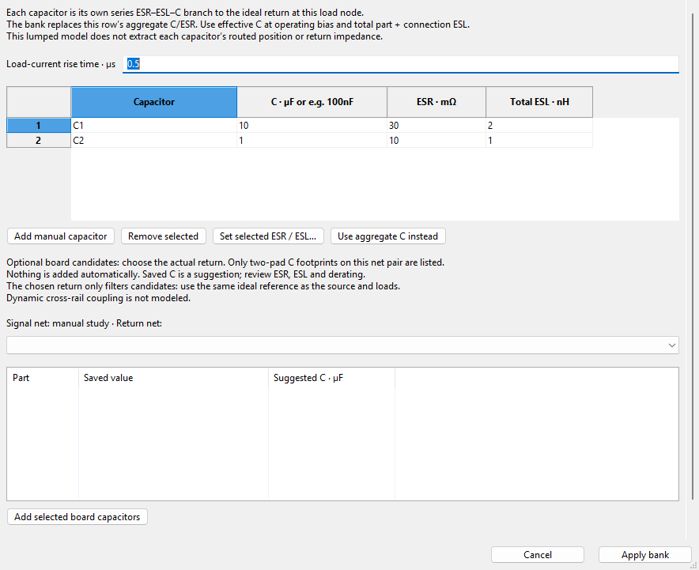
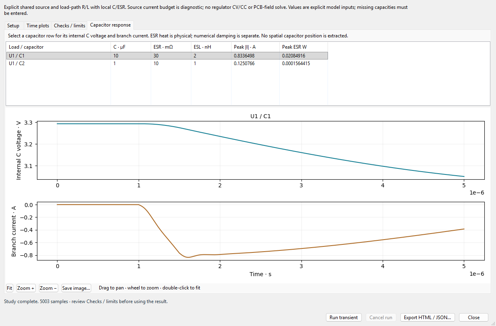

Steps and illustrations are available offline. Links to shared repository documentation and research need an internet connection.
Use this guide to choose, configure and review Quick PI studies. It describes the 3.6.40 interface. README and screenshot provenance · Offline HTML edition · Compact help.
Choose the physical question before entering numbers. These workflows are separate models; selecting a more detailed-looking plot does not change the physics.
| Question | Start here | Essential inputs and limits |
|---|---|---|
| Board DC voltage drop, current sharing and copper loss | Main window, 2.5D layered copper | Saved copper, stackup, source and loads. Fixed temperature unless explicit feedback is enabled. |
| Shared ground rise between rails | Rails / ground returns | Explicit ground source and load contacts. Fixed-current 2.5D shared-return groups. |
| Reference-plane coverage and nearby return vias | Return path tab | Explicit return nets. Geometric audit, not electrical loop impedance. |
| DC current through copper volume | 3D copper model | Gmsh, manual mesh and supported through-hole geometry. No AC effects. |
| Temperature changes resistance | Include Joule heating / temperature feedback | Explicit materials, cooling, bounds and converged coupling. |
| SMPS harmonic skin/proximity losses | More → AC / SMPS copper study | Declared straight conductor cross-sections and RMS harmonics; no whole-board AC extraction. |
| Capacitors close to load pins | Decoupling placement | Saved rail/return connectivity and distance thresholds; proximity heuristic. |
| Lumped PDN impedance | Decoupling → Lumped impedance screen | Source R/L, effective capacitor C/ESR/ESL and target; no distributed board extraction. |
| Voltage response to a load step | More → Transient load-step study | Explicit source/path R/L, load demand, C/ESR/ESL and time settings. |
| Melting or concentrated current risk | Inspect → Copper melting bottlenecks | Solved 2.5D current, pulse and material assumptions; not fuse-clearing or ampacity certification. |
For source or wheel CLI use, install into the intended interpreter and check wayricad-pi --help. Source checkout commands can replace wayricad-pi with python -m quick_pi_plugin.cli. GUI use still needs the supported native KiCad environment. Do not install arbitrary packages into another Python and assume the managed worker will use them.

This genuine native Marble preview demonstrates geometry and copper-first display; it is not itself a new solved or measured board result.
An illustrative CLI run is:
wayricad-pi C:/Projects/Example/board.kicad_pcb --net VCC --source J1.1 --sink U1.1 --voltage 3.3 --current 1 --auto-mesh --output pi.json --html pi.htmlReplace every sample net and pad with exact names from your board. Run the command with just the PCB path to list saved nets, pads and layers first.
| Demand | Meaning | How to use it |
|---|---|---|
| Constant current | Prescribed load A; voltage depends on copper drop | Main Load control or Additional sinks. Best starting point for a rail budget. |
| Constant power | Prescribed load W; current depends on solved load voltage | Choose Constant power · W. Use actual delivered load power, not source input power. |
| Resistive load | Prescribed Ω; solve positive DC current from source and path | Choose Resistive load. Separate single-path workflow. |
| Current sweep | Several independent DC operating points | More → DC current sweep; 2–200 positive current points. This is not a time waveform. |
Additional sinks can mix fixed A and W in the supported fixed-temperature 2.5D workflow. Each demand is a total for its load unit. A source budget is a diagnostic: it does not simulate regulator foldback, current limiting or converter control. INFEASIBLE means the entered current budget or voltage window is not met. The requested-load field can remain useful diagnostically but must not be described as the source's achievable operating point.
Constant-power mode solves a nonlinear high-voltage DC operating point and reports collapse or failed acceptance. It does not enable transient constant-power regulation. Shared-return power coupling, automatic current-based convergence, sweeps, series/package and 3D power combinations retain their stated restrictions. See constant-power details.
Grouped pads are ideal equipotential contacts. The solver distributes their current according to copper conductance; it does not assign equal current to every pin. Package and internal resistances are absent unless explicitly modeled by a supported contact workflow. Same-net pins on different footprints are not silently combined. Duplicate, overlapping or cross-net contacts fail validation.
For exact grouped current units, use the batch schema and the bundled shared-return example. A supply case can use source_terminals and sink terminals arrays; singular and plural alternatives must not be supplied together.
wayricad-pi C:/Projects/Example/board.kicad_pcb --net VCC --source J1.1 --voltage 3.3 --load U1.1 0.8 --power-load U2.1 1.65 --source-current-limit 2 --load-voltage-limits U1.1 3.1 3.4 --html loads.html --output loads.jsonThe flat CLI example uses single-pad endpoints. Use JSON for explicitly grouped contacts; repeating a sink pad is not a way to form a group.
The Net, Mesh and Results tabs share the board canvas. Drag to pan, use the wheel to zoom and double-click or Fit to restore the extent. Setup and Inspect header controls hide side panels; drag the inspector divider and table columns instead of accepting unreadably small panes.
The first multi-layer view selects All copper layers. Silk is a separate toggle, off by default; Board retains outline and holes. Copper and Field independently toggle extracted geometry and results. Only simulated nets limits context; uncheck it deliberately to inspect surrounding copper. An all-layer projection can make local picking ambiguous: choose a physical layer for exact inspection.
Select a result quantity and read its unit/colour legend. Hover to inspect solved cells; click to pin and Ctrl-right-click to clear point probes. Losses and Probe tables sort by column and cross-select supported cells, layers and barrels. Exact saved object identity is needed for selection in the originating PCB Editor; an approximate visual location is not proof of an editable native match.
V1, V2… identify extracted physical vias in board-coordinate order. Axial segments share that physical via ID and show their layer span. C1, C2… are mesh-cell IDs. Original native UUIDs remain in evidence; cell numbering can change after remeshing.
After an eligible fixed-temperature 2.5D constant-current solve, leave Ctrl+scroll load enabled. Plain scroll zooms. Ctrl+scroll near a sink pad or marker changes only that load unit; all grouped pads control the same total. Near a source marker, or elsewhere on solved copper, it scales the total and preserves load proportions. Nearby ambiguous markers consume the gesture without changing a load: zoom, choose a layer or move closer to the intended sink.
Slow scrolling gives fine increments; faster scrolling gives coarser increments. Base step · A sets the normal step. A pause or reversal restarts fine adjustment. Enable Cursor preview and choose Selected metric or All metrics to compare the old/new current and signed field change near the pointer. Increase/decrease colours are not pass/fail indicators. Wait for pending work before export.
Proportional updates reuse the linear field: drop and J scale with I, loss with I². An independent sink change needs a new fixed-mesh electrical solve, so its first update can take longer. This control is unavailable for power loads, resistive loads, series/package paths, 3D and temperature-feedback studies.
In Inspect → Probe select Set probe A, click solved sheet copper and click B. Orange A and blue B markers show the positions. Read signed V(A) − V(B); Clear A/B returns to single-point inspection. Both points must share one solved case's potential reference. Independent case voltages cannot be subtracted merely because their plots look alike.

The image is a computed analytical strip fixture, not a measured board. Sampling uses finite-element nodal potential within the containing triangle. Holes, missing nodes, unsupported full-volume points and barrel interiors remain unknown. In all-layer projection select the physical layers explicitly.
python -m quick_pi_plugin.cli --probe-result pi.json --probe-a 0 2 0.5 --probe-b 0 8 0.5 --output differential.jsonUse actual saved mesh layer IDs and solved coordinates. This reads a saved result without a new solve. The HTML report retains saved probe values; reports up to 20,000 triangles also provide a separate click-to-pick A/B map.
Automatic mesh recommends a background size from occupied copper extent and grades refinement near supported tracks, pad contacts and barrel lands. It is a geometry heuristic, not an error estimator. Curved paths, narrow zone necks and contact peaks can still need manual examination. A hard budget stops the run; the tool does not silently discard a fine feature to make the run finish.
CLI alternatives are --auto-mesh or --mesh-edge 0.2 in mm, never both. Add --mesh-only to inspect a mesh without solving. --mesh-backend auto uses Gmsh when available or the VTK alternative; explicit gmsh/vtk requires that backend. Default 2.5D budget is 400,000 triangles. --max-cells accepts 1,000–2,000,000 for supported ordinary 2.5D cases; a larger budget can require several GB of memory. Do not increase it automatically without reviewing available memory and scope.
wayricad-pi C:/Projects/Example/board.kicad_pcb --net VCC --source J1.1 --sink U1.1 --current 1 --voltage 3.3 --mesh-edge 0.4 --converge-levels 4 --convergence-tolerance-percent 1 --html convergence.html --output convergence.jsonThree to five levels are supported. Both final refinement changes must meet the selected criterion. Local peak and physical-model acceptance still require review.
Batch studies contain 1–32 cases bound to one saved PCB hash. Start from batch rails, replacing illustrative names and numbers. Source or study changes invalidate the batch.
One shared-return group solves its return copper once with every mapped current. Changing one rail can change another rail's ground rise. Multiple groups cannot reuse a case. Return loss is counted once, not once per rail. Shared groups do not support constant-power regulation, series/package branches, 3D loops or combined loop temperature feedback. The legacy single-load return_conduction schema remains available; new grouped studies should use shared_returns.
wayricad-pi C:/Projects/Example/board.kicad_pcb --batch reviewed-rails.json --output rails.json --html rails.htmlThe Return path tab answers a different question. Choose signal and return nets, then Review return path. More return options contains multi-return selection, optional pads and sampling. Refill and save first. Inspect adjacent filled-plane coverage, gaps and return vias near evidenced transitions. A clear sampled route does not prove electrical closure, loop inductance or controlled impedance.
wayricad-pi C:/Projects/Example/board.kicad_pcb --return-path --net VCC --return-nets GND --return-pitch 0.25 --return-via-radius 2 --html return-review.htmlSee return audit method for geometry support and evidence limits.
Use Build series path to represent an actual path crossing nets through explicit two-pad components. Choose source and sink pads, add compatible parts in order and review the model value for every stage. Use KiCad selected pads/components only after confirming which originating editor supplied them.
Parallel parts finds two-pad parts across the same exact saved net pair, including reversed pin order. Check only intended branches and verify each R/L model; resistor values may be suggestions, but unknown DCR is not invented. Highlight included parts before running. Save the reviewed path JSON for reuse.
Console commands run the same bounded worker, not a Python shell. Expand Console; use help, nets, pads NET, Tab completion and Up/Down history. Quote net names containing spaces. An illustrative series path is:
run pi C1.1 R1.1 5m R1.2 L1.1 5mH+30m L1.2 U8.2This declares 5 mΩ and 5 mH + 30 mΩ, not automatically measured components. Inductance adds no steady-state DC drop; it contributes stored-energy reporting. Fixed-drop and forward diode models are also explicit DC operating-point models, not switching or reverse-bias simulation. Additional sinks and explicit series paths cannot be silently combined. Syntax and diode restrictions.
wayricad-pi C:/Projects/Example/board.kicad_pcb --series-file reviewed-path.json --voltage 3.3 --current 2 --html series.html --output series.jsonPackage contacts adds reviewed one-dimensional resistance paths between a package port and specific board pad faces. Declare geometry, material resistivity and attachment layer; use explicit interface resistance where justified. No package dimensions or material values are inferred. Review current sharing and separate sheet, barrel, package and component losses.
Use --package-conduction contacts.json only in the supported constant-current 2.5D workflow. It is not a 3D solder field or reliability model. Series paths, resistive loads, sweeps, 3D, rail transients and electrothermal modes reject these contacts. Contact schema and example.
Choose Copper model → 3D · copper volume (Gmsh), select source/sink and a specified current, then set a manual mesh and tetrahedron budget. Gmsh is required; first setup may need package access. Preview before Run 3D copper. Inspect layer/barrel filters, voltage, current-density and volumetric-loss fields. Orbit, pan, wheel zoom and sampled-cell probes affect only the view. Exports retain complete numerical fields even when the display samples for speed.
wayricad-pi C:/Projects/Example/board.kicad_pcb --net VCC --source J1.1 --sink U1.1 --voltage 3.3 --current 1 --model-dimension 3d --mesh-edge 0.25 --max-tetrahedra 250000 --output pi-3d.json --html pi-3d.htmlThe model uses saved layer positions, copper solids and supported circular through-hole plating. Plated slots, backdrills and unresolved drill contours are unsupported in this volume mode. It is fixed-temperature DC, with no AC skin, displacement current, series components or thermal feedback. Automatic volumetric mesh sizing and the 2.5D melting screen are unavailable. Review volume and conservation checks and refine before relying on local peaks.
Ordinary DC already computes I²R loss. It separates sheet, via barrel and explicit component/contact losses. Delivered load power is not automatically board heat.
After a 2.5D solve, choose Inspect → Copper melting bottlenecks or the Pulse / adiabatic melting action map. Enter Pulse · s, initial/ambient temperature, melting temperature and latent heat under Mesh & material. Review the actual material assumptions; defaults are explicit modeling assumptions. Select rows to focus solved cells/barrels and exact native objects where available. B1–B6 mark the leading ranked regions; Vn continues to identify a physical via.
The screen estimates local adiabatic melting action with a frozen DC field. It omits cooling, changing current sharing, molten geometry, arcing and circuit interruption. Long predicted times are especially sensitive to those omissions. Ranking is current-density-based with spatial suppression, not a guaranteed geometric minimum-cut detector. Mesh/contact peaks can dominate. Melting onset is not fuse opening, protection coordination or safe ampacity.
wayricad-pi C:/Projects/Example/board.kicad_pcb --net VCC --source J1.1 --sink U1.1 --voltage 3.3 --current 2 --pulse 0.01 --ambient 25 --melting-temperature 1084.62 --latent-heat 206750 --output pulse.json --html pulse.htmlSee material integral, validity and references.
Check Include Joule heating / temperature feedback only after reviewing the thermal model. This adds steady temperature-dependent resistance iteration; it does not enable or disable ordinary DC loss accounting.
More → Electrothermal study also offers explicit lumped rail/thermal-RC transients. These are separate from spatial full-board transient fields. Finite-contact temperature feedback and individual shunt-bank electrothermal stepping remain unsupported. See complete input, example and CLI guide.
wayricad-pi C:/Projects/Example/board.kicad_pcb --electrothermal reviewed-electrothermal.json --output electrothermal.json --html electrothermal.html

These genuine native captures use an explicit illustrative copper pair, not automatically extracted PCB geometry. Capture inputs and checks.
AC inputs use mm, Hz, A, V and °C; tables display engineering units. JSON geometry uses cross-section centre x/y, width along x and thickness along y. Include every modeled return. Skin/proximity redistribution is solved in the straight uniform section; changing its length is not equivalent to importing a routed board.
Mesh and magnetic-domain refinement compare impedance independently. UNCONVERGED values are provisional. Local J peaks can remain sensitive even when port values settle. Supported temperature, harmonic count, budget and electrically-short limits are checked. No converter control, dielectric field, HV spacing or whole-board AC/thermal qualification is implied. Fixed-temperature harmonic losses are not automatically injected into the saved-board DC temperature iteration.
wayricad-pi --ac reviewed-ac.json --output ac-result.json --html ac-report.htmlStart from the illustrative SMPS input, then use AC method and limits and setup help.
Open Decoupling placement, set rail/ground patterns, load-reference patterns and maximum capacitor-pad distance, then Analyze PDN. Review qualified rail-to-return capacitors, failed/warning pins and the linked placement map. Double-click a row to locate its component and export CSV. Reload saved board after refill/save. This does not move parts or predict electrical impedance from proximity.
The network is source R/L in parallel with series C/ESR/ESL branches relative to the ideal source AC ground. Resonance-aware sampling helps but cannot prove that every narrow peak was found. SAMPLED_TARGET_MET applies to the explicit sampled network only. Placement extraction, regulator control, distributed plane effects and automatic capacitor derating are absent. PDN model and checks.


These are genuine captures of the explicit shunt example. The illustrative 3.3 V network is not a measured PCB or regulator model.
The model begins at pre-step DC equilibrium and advances an explicit lumped rail network. Source current budget violations are diagnostics, not simulated current limiting. Finite-rise events are prescribed, not switching-device dynamics. An ideal step requiring an impulse in an all-inductive cutset is rejected; use a physically supported rise time. Review charge, energy and half-step checks. The bank supports at most 128 total aggregate/shunt branches within bounded time/trace budgets; oversized work is rejected rather than silently truncated.
wayricad-pi --transient reviewed-transient.json --output transient-result.json --html transient-report.htmlAn optional positional PCB binds source provenance but does not extract the circuit R/L/C. JSON uses F, Ω, H and s; bank IDs must be globally unique. Current shunt-bank transients do not include constant-power control, arbitrary distributed capacitor positions or coupled electrothermal stepping. Time setup guide.
Export from the study that produced the current result. Native Export creates offline HTML and paired JSON with source custody, inputs, fields and checks. Choose distinct HTML, paired JSON and explicit JSON output paths. Keep batch case-report folders beside their complete parent JSON: lightweight child JSON descriptors refer into that archive rather than duplicating every array.
Reports include voltage/drop, J and loss maps. Large planar models use three primary static figures to control cost; numerical cells remain in evidence. Interactive fields are retained where supported. The Power flow Sankey goes from source power to delivered load power and modeled losses. Shared return loss is counted once; unsupported or inconsistent accounting reports unavailable instead of inventing a balance. It is a power budget, not spatial current streamlines.
For native 3D reports, drag to orbit, Shift-drag to pan and wheel to zoom. Saved views and probes do not modify the PCB. HTML is the interactive deliverable; static PDF cannot retain browser interaction or every canvas/SVG view.
Use Print / save as PDF, or install the reports extra in the exporting interpreter and run:
python -m wayricad_runtime.tool_cli report-pdf pi.html --output pi.pdf --evidence pi.json
python -m wayricad_runtime.tool_cli report transient-result.json --html review.html --pdf review.pdfDirect PDF retains text, tables and embedded PNG/JPEG figures. Unsupported interactive-only views are listed. Raw JSON is a closed evidence disclosure in HTML and summarized in PDF by default. --include-raw-evidence requests raw evidence in PDF when needed. Generic saved-JSON export creates readable tables; it does not rerun the original study or reconstruct missing fields. Shared report guide.
Use wayricad-pi --help for the actual installed parser. Named JSON modes use their own schema and restricted flag combinations; do not append ordinary DC flags expecting them to override a different study. --timeout bounds worker time. --verify runs the analytical reference suite, not your board.
| Exit | Meaning |
|---|---|
| 0 | Completed accepted calculation for the selected workflow; not general physical qualification. |
| 2 | Invalid inputs, unsupported combination, execution or publication error. |
| 3 | Incomplete/review-needed or unstable/nonconverged study, depending on mode. |
| 4 | Entered load/source or operating limits violated; not an automatically corrected design. |
Saved differential probing returns 3 when not sampled and 2 for invalid input. Batch results retain per-case failure status; inspect those rows even when some rails succeeded. Preserve input JSON, full output, logs and report together.
Use the shared report runner and native KiCad jobset integration for ordered PI/SI/Therm steps, logs and a report index. It calls the same CLI, so required inputs, rejection rules and solver limits still apply. Jobset setup and examples.
| Symptom | Action |
|---|---|
| Copper missing or wrong board | Confirm originating editor, refill/save, then More → Reload saved board. Unsaved changes are not the saved snapshot. |
| Only silk or clutter visible | Update/restart, select All copper layers, turn Copper on and Silk off. Check Only simulated nets and physical-layer filtering. |
| No matching terminal or disconnected copper | Inspect exact net/pad names, actual connectivity and filled zones. A name match alone is not a connected copper path. |
| PCB changed since analysis | Save the intended revision, reload and rerun. Do not bypass source checks to export an old result as current. |
| Missing runtime/dependency | Read the setup log and use the intended managed/native interpreter; check allowed package source or configured offline wheels. |
| Memory, budget or timeout | Start with fewer cases/a smaller net or reviewed coarser mesh, then refine. Increase explicit budgets only when memory permits. |
| Current wheel does nothing | Confirm fixed-temperature constant-current 2.5D mode, enabled control and unambiguous marker/layer; unsupported modes require Run. |
| Probe unknown | Choose actual solved sheet copper on a physical layer; holes, gaps, unknown nodes and unsupported dimensions remain unknown. |
| Result INFEASIBLE | Review load units, source budget and delivered voltage. Do not describe requested-load diagnostics as a sustainable source operating point. |
| AC UNCONVERGED or transient large half-step change | Refine numerical settings within applicability/budgets and inspect inputs. A coloured plot is not acceptance evidence. |
| Current-density peak keeps increasing | Examine contact/corner singularity and mesh sensitivity separately from terminal drop; retain unresolved status. |
| Sankey unavailable | Read missing/inconsistent power evidence. Do not force balance by hiding losses or counting delivered watts as copper heat. |
Before accepting a study, confirm source revision, geometry, units, demand and return assumptions; read all unknown/incomplete cases; inspect conservation; perform relevant mesh/time refinement; and compare against measured or independent reference evidence where required. Successful execution and attractive plots establish neither hardware safety nor manufacturing acceptance.
The layered model solves conductivity with finite-element potentials and axial barrel paths; 3D uses tetrahedral conductivity FEM. AC uses its explicit local A–V cross-section formulation. Transients use explicit lumped circuit equations and numerical time/conservation checks. These are different models and should not be described as one full-board electromagnetic simulation.
For equations, implementation scope, analytical checks and research attribution:
All screenshots above retain their documented synthetic/public-board context. Older screenshots elsewhere in the README remain useful examples but their capture version is not evidence that every window has been recaptured for 3.6.40.
This feature is in the updated source; existing 3.6.40 installers do not contain it.
After a supported completed study, choose Blender… in the main result workspace. Choose a new output folder and optionally open an installed Blender. The export includes geometry, available field data and supported computed frames. Export saved transient or other supported results through the shared CLI when they are not the main workspace result. Review the Blender walkthrough for commands, units, playback, result coverage and limits. This is visualization, not an additional numerical solve.